绝密★启用前
2017年普通高等学校招生全国统一考试
理科综合能力测试
注意事项：
1．答卷前，考生务必将自己的姓名、准考证号填写在答题卡上。
2．回答选择题时，选出每小题答案后，用铅笔把答题卡上对应题目的答案标号涂黑，如需改动，用橡皮擦干净后，再选涂其它答案标号。回答非选择题时，将答案写在答题卡上，写在本试卷上无效。
3．考试结束后，将本试卷和答题卡一并交回。
可能用到的相对原子质量：H 1 C 12 N 14 O 16 S 32 Cl35.5 K39 Ti 48 Fe 56 I 127
相关题目：第 7 题 · 第 8 题 · 第 9 题 · 第 10 题 · 第 11 题 · 第 12 题 · 第 13 题 · 第 26 题 · 第 27 题 · 第 28 题 · 第 35 题 · 第 36 题
一、选择题：本题共13个小题，每小题6分，共78分。在每小题给出的四个选项中，只有一项是符合题目要求的。
本册收录其中的化学第7—13题。
相关题目：第 7 题 · 第 8 题 · 第 9 题 · 第 10 题 · 第 11 题 · 第 12 题 · 第 13 题
返回原卷说明与相对原子质量 返回选择题说明
题目与已知条件
下列生活用品中主要由合成纤维制造的是
A．尼龙绳 B．宣纸 C．羊绒衫 D．棉衬衣
查看原题图／原始配图
读题与思路
按组成而非用途分类：尼龙的聚酰胺链由小分子合成，A成立；宣纸和棉的主体为天然纤维素，羊绒为天然蛋白质，B、C、D不属于合成纤维。
分步解析
- 尼龙为人工合成的聚酰胺纤维，尼龙绳符合，A正确。
- 宣纸主要为纤维素；羊绒主要为蛋白质；棉衬衣主要为棉纤维即纤维素，后三者所用纤维均来自天然原料。
检查与易错点
加工成绳、纸或衣物不使天然高分子自动变为合成高分子。
本题来源：paper2017 · doc-paper
返回原卷说明与相对原子质量 返回选择题说明
题目与已知条件
《本草衍义》中对精制砒霜过程有如下叙述：“取砒之法，将生砒就置火上，以器覆之，令砒烟上飞着覆器，遂凝结累然下垂如乳，尖长者为胜，平短者次之。”文中涉及的操作方法是
A．蒸馏 B．升华 C．干馏 D．萃取
查看原题图／原始配图
读题与思路
过程起点为固态砒霜，受热成蒸气，在覆器上直接结成固体；以固—气—固的物态路径判断为升华提纯。蒸馏需要液体汽化，干馏涉及隔绝空气热分解，萃取需要溶剂间分配，故选B。
分步解析
- 底部加热使粗砒霜中的可升华组分进入气相，上部覆器并保持冷却，使蒸气凝华沉积为“尖长者”。
- 该固—气—固分离过程为升华法，选B。蒸馏依赖液体汽化，干馏强调隔绝空气加热分解，萃取需要溶剂间分配，均不符合文意。
检查与易错点
这里是辨认历史操作，不是可在家庭实施的实验；含砷物质有毒。
本题来源：paper2017 · doc-paper
返回原卷说明与相对原子质量 返回选择题说明
题目与已知条件
已知 （b）、
（b）、 （d）、
（d）、 （p）的分子式均为C6H6，下列说法正确的是
（p）的分子式均为C6H6，下列说法正确的是
A．b的同分异构体只有d和p两种
B．b、d、p的二氯代物均只有三种
C．b、d、p均可与酸性高锰酸钾溶液反应
D．b、d、p中只有b的所有原子处于同一平面
查看原题图／原始配图
所用高中知识
同分异构、二取代等效位置、芳香结构和平面性。
读题与思路
苯的六个碳为平面sp²骨架，连于其上的氢也在平面。图d和p有连接四个原子的饱和碳，不能所有原子共面。苯还有链状C₆H₆异构体；d的不同位置二取代不止三种；苯不能被普通酸性高锰酸钾氧化。唯一成立D。
分步解析
- 三者均为C₆H₆，但还有其他同分异构体，例如己-1,5-二炔，A错误。
- 苯的二氯代物为邻、间、对3种；杜瓦苯有桥头碳与烯碳两类，按环上位置对称分类其二氯代物有6种，故B所说全部只有3种不成立。
- 苯不能使酸性高锰酸钾溶液褪色，不能因分子式含较少H便把苯当普通烯烃，C错误。
- 苯中6个C及6个H可共面；杜瓦苯、棱晶烷的空间折叠/笼状骨架不共面，因此D正确。
检查与易错点
杜瓦苯的6种位置组合只计构造异构，不额外展开立体异构；这已足以否定B。
本题来源：paper2017 · doc-paper
返回原卷说明与相对原子质量 返回选择题说明
题目与已知条件
实验室用H2还原WO3制备金属W的装置如图所示（Zn粒中往往含有硫等杂质，焦性没食子酸溶液用于吸收少量氧气），下列说法正确的是
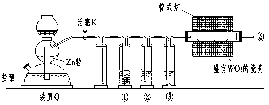
A．①、②、③中依次盛装KMnO4溶液、浓H2SO4、焦性没食子酸溶液
B．管式炉加热前，用试管在④处收集气体并点燃，通过声音判断气体纯度
C．结束反应时，先关闭活塞K，再停止加热
D．装置Q（启普发生器）也可用于二氧化锰与浓盐酸反应制备氯气
查看原题图／原始配图
所用高中知识
气体净化、验纯、防倒吸和启普发生器条件。
读题与思路
还原WO₃前必须用氢气赶净氧气，并在出口④收集验纯，因此B成立。湿法除杂完成后才用浓硫酸干燥；停炉后继续通氢到冷却，防止热W被空气氧化；需加热的MnO₂/浓盐酸反应不适用于启普发生器。
分步解析
- Zn杂质产生的还原性杂气先用酸性KMnO₄除去，再用焦性没食子酸溶液除O₂，最后浓H₂SO₄干燥。A把水溶液洗气放在干燥后，会重新带入水蒸气。
- 加热管式炉前，在出口④用试管收集气体并检验纯度，确认已排尽空气，B正确。
- 结束时先停止加热，保持H₂通入至冷却，再关闭K，避免热W被空气氧化及冷却时倒吸，C顺序不妥。
- MnO₂和浓盐酸制Cl₂需加热，不能用不便加热的启普发生器Q，D错误。
检查与易错点
验纯是在收集的小份气体上进行，不能直接把火焰靠近装置出口来“试一试”。
本题来源：paper2017 · doc-paper
返回原卷说明与相对原子质量 返回选择题说明
题目与已知条件
支撑海港码头基础的钢管桩，常用外加电流的阴极保护法进行防腐，工作原理如图所示，其中高硅铸铁为惰性辅助阳极。下列有关表述不正确的是
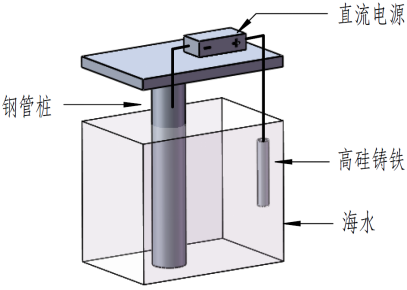
A．通入保护电流使钢管桩表面腐蚀电流接近于零
B．通电后外电路电子被强制从高硅铸铁流向钢管桩
C．高硅铸铁的作用是作为损耗阳极材料和传递电流
D．通入的保护电流应该根据环境条件变化进行调整
查看原题图／原始配图
读题与思路
题设把高硅铸铁规定为惰性辅助阳极，意味着提供析出反应及导电界面而非靠自身溶解保护钢柱。钢柱接负极获得电子，抑制Fe失电子，环境变化会改变所需保护电流。把惰性辅助阳极说成损耗阳极的C错误。
分步解析
- 直流电源向钢管桩供电子，抑制Fe→Fe²⁺+2e⁻的腐蚀过程，合适保护电流可使腐蚀电流接近零，A成立。
- 外电源使电子经外电路由辅助阳极一侧流向钢管桩阴极一侧，B符合图意。
- 高硅铸铁承担惰性辅助阳极和导电作用，不是被有意牺牲的活泼金属阳极，C错误。
- 海水含氧、盐度、温度等环境改变，所需保护电流也会变化，D成立。
检查与易错点
外加电流保护和锌块牺牲阳极保护都让钢铁作阴极，但供电子方式不同。
本题来源：paper2017 · doc-paper
返回原卷说明与相对原子质量 返回选择题说明
题目与已知条件
短周期主族元素W、X、Y、Z的原子序数依次增大，W的简单氢化物可用作制冷剂，Y的原子半径是所有短周期主族元素中最大的。由X、Y和Z三种元素形成的一种盐溶于水后，加入稀盐酸，有黄色沉淀析出，同时有刺激性气体产生。下列说法不正确的是
A．X的简单氢化物的热稳定性比W的强
B．Y的简单离子与X的具有相同的电子层结构
C．Y与Z形成的化合物的水溶液可使蓝色石蕊试纸变红
D．Z与X属于同一主族，与Y属于同一周期
查看原题图／原始配图
所用高中知识
元素周期律、硫代硫酸根酸解、等电子离子和盐水解。
读题与思路
制冷氢化物NH₃锁定W=N，短周期最大主族原子半径锁定Y=Na；酸化生成S与SO₂锁定Na₂S₂O₃，所以X=O、Z=S。H₂O比NH₃热稳定，Na⁺/O²⁻均10电子；Na₂S水解呈碱性，不能使蓝色石蕊变红。选C。
分步解析
- W的简单氢化物是制冷剂NH₃，W为N；短周期主族中原子半径最大者Na，Y为Na。
- 盐加酸同时生成淡黄色S和刺激性SO₂，可为Na₂S₂O₃：S₂O₃²⁻+2H⁺→S↓+SO₂↑+H₂O。按序数N<X<Na<Z得X为O、Z为S。
- H₂O热稳定性强于NH₃，A正确；Na⁺和O²⁻均有10电子，B正确。Na₂S水解显碱性，使红色石蕊变蓝，不能使蓝色变红，C错误。
- S与O同主族，S与Na同第三周期，D正确。
检查与易错点
Na₂S与Na₂S₂O₃是不同盐；元素推断依据后者，选项C所问二元盐是前者。
本题来源：paper2017 · doc-paper
返回原卷说明与相对原子质量 返回选择题说明
题目与已知条件
常温下将NaOH溶液添加到己二酸（H2X）溶液中，混合溶液的pH与离子浓度变化的关系如图所示。下列叙述错误的是
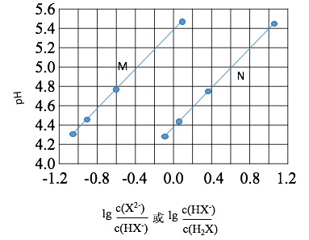
A．Ka2（H2X）的数量级为10-6
B．曲线N表示pH与lg 的变化关系
C．NaHX溶液中c(H＋)＞c(OH－)
D．当混合溶液呈中性时，c(Na＋)＞c(HX-)＞c(X2-)＞c(H+)=c(OH-)
查看原题图／原始配图
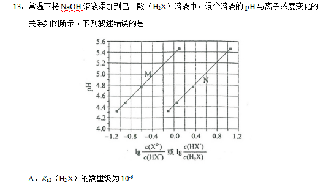
原始配图 1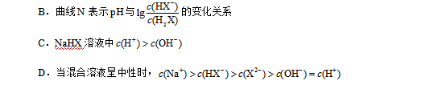
原始配图 2所用高中知识
逐级电离常数、两性离子、盐水解和电荷守恒。
读题与思路
由pH=pKa+lg(共轭碱/酸)，同一纵坐标下较右的N对应较大的Ka₁。M过(-0.6,4.8)，pKa₂=5.4；N的pKa₁约4.4。NaHX中Ka₂远大于Kw/Ka₁，呈酸性。pH=7时c(X²⁻)/c(HX⁻)=10^(7−5.4)>1，故D把HX⁻、X²⁻先后颠倒。
分步解析
- 由Ka₁=c(H⁺)c(HX⁻)/c(H₂X)，得pH=pKa₁+lg[c(HX⁻)/c(H₂X)]，N线横轴0处pH约4.4，故pKa₁≈4.4，B成立。
- M线对应第二级电离，横轴0处pH约5.4，Ka₂≈10⁻⁵·⁴≈4×10⁻⁶，数量级为10⁻⁶，A成立。
- NaHX中HX⁻既可电离又可水解。Ka₂≈4×10⁻⁶远大于Kb=Kw/Ka₁≈2.5×10⁻¹⁰，溶液呈酸性，C成立。
- 中性pH7时，lg[c(X²⁻)/c(HX⁻)]=7−5.4=1.6，故X²⁻多于HX⁻。电荷守恒c(Na⁺)=c(HX⁻)+2c(X²⁻)，实际主要顺序是Na⁺>X²⁻>HX⁻，D把后两者颠倒。
检查与易错点
原图分数包含上下标：M为X²⁻/HX⁻，N为HX⁻/H₂X；不可误读为倒数。
本题来源：paper2017 · doc-paper
三、非选择题：共174分。第22~32题为必考题，每个试题考生都必须作答。第33~38题为选考题，考生根据要求作答。
（一）必考题（共129分）
相关题目：第 26 题 · 第 27 题 · 第 28 题 · 第 35 题 · 第 36 题
返回原卷说明与相对原子质量 返回非选择题说明
题目与已知条件
（15分）凯氏定氮法是测定蛋白质中氮含量的经典方法，其原理是用浓硫酸在催化剂存在下将样品中有机氮转化成铵盐，利用如图所示装置处理铵盐，然后通过滴定测量。已知：
NH3+H3BO3=NH3·H3BO3；
NH3·H3BO3+HCl= NH4Cl+
H3BO3。
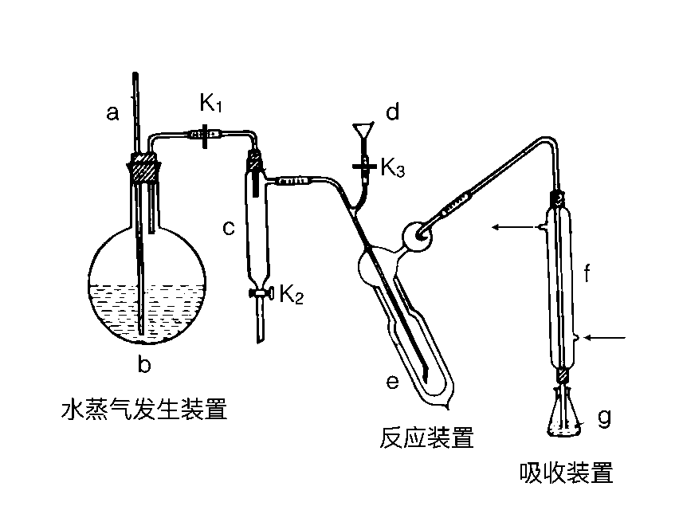
回答下列问题：
（1）a的作用是_______________。
（2）b中放入少量碎瓷片的目的是____________。f的名称是__________________。
（3）清洗仪器：g中加蒸馏水：打开k1，关闭k2、k3，加热b，蒸气充满管路：停止加热，关闭k1，g中蒸馏水倒吸进入c，原因是____________；打开k2放掉水，重复操作2~3次。
（4）仪器清洗后，g中加入硼酸（H3BO3）和指示剂，铵盐试样由d注入e，随后注入氢氧化钠溶液，用蒸馏水冲洗d，关闭k3，d中保留少量水，打开k1，加热b，使水蒸气进入e。
①d中保留少量水的目的是___________________。
②e中主要反应的离子方程式为________________，e采用中空双层玻璃瓶的作用是________。
（5）取某甘氨酸（C2H5NO2）样品m
克进行测定，滴定g中吸收液时消耗浓度为c mol·L-1的盐酸V
mL，则样品中氮的质量分数为_________%，样品的纯度≤_______%。
查看原题图／原始配图
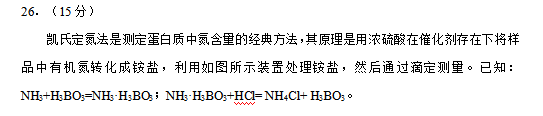
原始配图 1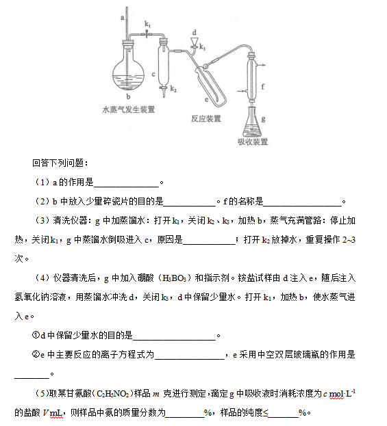
原始配图 2所用高中知识
蒸汽蒸馏、碱释放氨、硼酸吸收、酸碱滴定和氮守恒。
读题与思路
先按气路辨a为泄压安全管、f为直形冷凝管；冷凝收缩使停热管路负压，水由g倒吸。d留水形成液封，e保温利于NH₄⁺+OH⁻→NH₃+H₂O完全进行。滴定1 mol HCl对应1 mol N，n(N)=cV×10⁻³ mol；氮百分含量为1.4cV/m。若所有氮均来自甘氨酸，甘氨酸百分含量为7.5cV/m；含氮杂质只会使实际纯度低于此值。
分步解析
- （1）a为与大气相通的安全长管，使蒸汽发生器b不会因压强过大而发生危险。（2）碎瓷片防暴沸；f为直形冷凝管。
- （3）停热并关闭k₁后，蒸汽冷凝、气相温度下降，在c及相关管路形成负压，g内热水被吸入c，便于清洗。
- （4）①d保留少量水作液封，防NH₃从加液口逸出；②NH₄⁺+OH⁻在加热下生成NH₃↑+H₂O。e的中空双层玻璃利于保温，使氨充分蒸出。
- （5）盐酸n=cV×10⁻³ mol。根据题给NH₃与硼酸、硼酸铵与HCl的1∶1关系，n(N)=cV×10⁻³ mol，m(N)=14cV×10⁻³ g。
- 氮质量分数=14cV×10⁻³/m；换成百分数为(1.4cV/m)%。每个甘氨酸分子含1个N，若样品其他组分不含N，甘氨酸质量为75cV×10⁻³ g，纯度为(7.5cV/m)%。
答案
（1）避免b压强过大。（2）防暴沸；直形冷凝管。（3）蒸汽冷凝降温形成负压。（4）液封防逸氨；NH₄⁺+OH⁻→NH₃↑+H₂O（加热）；保温促完全蒸出。（5）氮质量分数为(1.4cV/m)%；纯度不超过(7.5cV/m)%。
检查与易错点
V按题以mL代入。纯度计算默认杂质不含氮、氨转移吸收完全；氮质量分数本身不等于甘氨酸纯度。
本题来源：paper2017 · doc-paper
返回原卷说明与相对原子质量 返回非选择题说明
题目与已知条件
（14分）Li4Ti5O12和LiFePO4都是锂离子电池的电极材料，可利用钛铁矿（主要成分为FeTiO3，还含有少量MgO、SiO2等杂质）来制备，工艺流程如下：
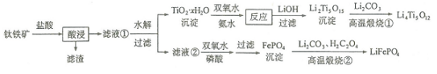
回答下列问题：
（1）“酸浸”实验中，铁的浸出率结果如下图所示。由图可知，当铁的浸出率为70%时，所采用的实验条件为___________________。
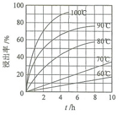
（2）“酸浸”后，钛主要以TiOCl42－形式存在，写出相应反应的离子方程式__________________。
（3）TiO2·xH2O沉淀与双氧水、氨水反应40
min所得实验结果如下表所示：
| 温度/℃ |
30 |
35 |
40 |
45 |
50 |
| TiO2·xH2O转化率% |
92 |
95 |
97 |
93 |
88 |
分析40℃时TiO2·xH2O转化率最高的原因__________________。
（4）Li2Ti5O15中Ti的化合价为+4，其中过氧键的数目为__________________。
（5）若“滤液②”中c(Mg2+)=0.02
mol·L−1，加入双氧水和磷酸（设溶液体积增加1倍），使Fe3+恰好沉淀完全即溶液中c(Fe3+)=1.0×10-5
mol·L−1，此时是否有Mg3(PO4)2沉淀生成？___________（列式计算）。
FePO4、Mg3(PO4)2的Ksp分别为1.3×10-22、1.0×10-24。
（6）写出“高温煅烧②”中由FePO4制备LiFePO4的化学方程式________________。
查看原题图／原始配图
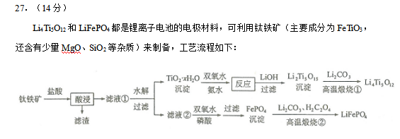
原始配图 1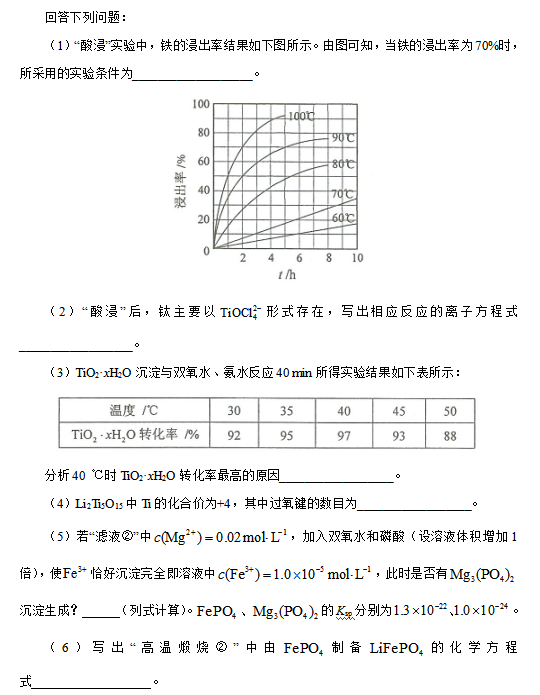
原始配图 2所用高中知识
浸出速率、配离子守恒、过氧键、沉淀平衡和氧化还原配平。
读题与思路
读70%水平交点得100 ℃/2 h或90 ℃/5 h。FeTiO₃酸溶配成FeTiO₃+4H⁺+4Cl⁻→Fe²⁺+TiOCl₄²⁻+2H₂O。过氧物中设过氧氧原子y：2+20−2(15−y)−y=0，y=8即4个过氧键。Mg浓度稀释为0.010，Fe刚沉尽时PO₄³⁻=1.3×10⁻¹⁷，Qc=1.69×10⁻⁴⁰<Ksp。草酸2个C各失1e，恰还原2个Fe³⁺，配得2FePO₄+Li₂CO₃+H₂C₂O₄→2LiFePO₄+H₂O+3CO₂。
分步解析
- （1）由浸出曲线读70%水平线交点：100 ℃约2 h，或90 ℃约5 h。较低温的图示曲线在给定时间范围内不到70%。
- （2）盐酸浸取：FeTiO₃+4H⁺+4Cl⁻→Fe²⁺+TiOCl₄²⁻+2H₂O。左、右总电荷均0，Fe、Ti、O、H、Cl逐一守恒。
- （3）低于40 ℃时升温加快反应，在40 min内转化更多；超过40 ℃，H₂O₂分解及NH₃逸出加剧，反应物有效浓度下降，转化率反而减小。
- （4）Li₂Ti₅O₁₅中Li为+1、Ti为+4，总正价22。设普通O²⁻有x个，过氧O⁻有y个，则x+y=15，2x+y=22，得x=7、y=8。每个过氧键连两个O，故有4个。
- （5）液体体积增大一倍，c(Mg²⁺)=0.010 mol·L⁻¹。Fe³⁺剩10⁻⁵时，c(PO₄³⁻)=1.3×10⁻²²/10⁻⁵=1.3×10⁻¹⁷。Qc=c³(Mg²⁺)c²(PO₄³⁻)=1.69×10⁻⁴⁰，比Ksp=1.0×10⁻²⁴小，因此不生成Mg₃(PO₄)₂沉淀。
- （6）2FePO₄+Li₂CO₃+H₂C₂O₄在高温下生成2LiFePO₄+H₂O+3CO₂↑。两个Fe由+3降+2共得2e，草酸两个C由+3升+4共失2e；碳酸根的C不变。
答案
（1）100 ℃、2 h；90 ℃、5 h。（2）FeTiO₃+4H⁺+4Cl⁻ ══ Fe²⁺+TiOCl₄²⁻+2H₂O。（3）低于40 ℃时，升温使转化反应速率加快；高于40 ℃时，双氧水分解、氨气逸出，反应物浓度降低，转化反应速率下降。（4）4。（5）不生成，Qc≈1.7×10⁻⁴⁰<Ksp。（6）2FePO₄+Li₂CO₃+H₂C₂O₄→2LiFePO₄+H₂O+3CO₂↑（高温）。
检查与易错点
读图时两组条件不是同时叠加。配平第(6)应核O：左8+3+4=15，右8+1+6=15；不要漏掉草酸的还原作用。
本题来源：paper2017 · doc-paper
返回原卷说明与相对原子质量 返回非选择题说明
题目与已知条件
（14分）近期发现，H2S是继NO、CO之后第三个生命体系气体信号分子，它具有参与调节神经信号传递、舒张血管减轻高血压的功能。回答下列问题：
（1）下列事实中，不能比较氢硫酸与亚硫酸的酸性强弱的是_________（填标号）。
A．氢硫酸不能与碳酸氢钠溶液反应，而亚硫酸可以
B．氢硫酸的导电能力低于相同浓度的亚硫酸
C．0.10 mol·L−1的氢硫酸和亚硫酸的pH分别为4.5和2.1
D．氢硫酸的还原性强于亚硫酸
（2）下图是通过热化学循环在较低温度下由水或硫化氢分解制备氢气的反应系统原理。
热化学硫碘循环水分解制氢系统（Ⅰ）：反应1、2、3；热化学硫碘循环硫化氢分解联产氢气、硫黄系统（Ⅱ）：反应2、3、4。| 反应 | 热化学方程式 | 反应焓 / (kJ·mol⁻¹) |
|---|
| 1（Ⅰ） | H₂SO₄(aq) = SO₂(g)+H₂O(l)+½O₂(g) | ΔH₁=327 |
| 2（Ⅰ、Ⅱ） | SO₂(g)+I₂(s)+2H₂O(l) = 2HI(aq)+H₂SO₄(aq) | ΔH₂=−151 |
| 3（Ⅰ、Ⅱ） | 2HI(aq) = H₂(g)+I₂(s) | ΔH₃=110 |
| 4（Ⅱ） | H₂S(g)+H₂SO₄(aq) = S(s)+SO₂(g)+2H₂O(l) | ΔH₄=61 |
通过计算，可知系统（Ⅰ）和系统（Ⅱ）制氢的热化学方程式分别为________________、______________，制得等量H2所需能量较少的是_____________。
（3）H2S与CO2在高温下发生反应：H2S(g)+CO2(g)⇌COS(g)
+H2O(g)。在610 K时，将0.10 mol CO2与0.40 mol
H2S充入2.5
L的空钢瓶中，反应平衡后水的物质的量分数为0.02。
①H2S的平衡转化率α1=_______%，反应平衡常数K=________。
②在620
K重复试验，平衡后水的物质的量分数为0.03，H2S的转化率α2_____α1，该反应的Δ
H_____0。（填“>”“<”或“=”）
③向反应器中再分别充入下列气体，能使H2S转化率增大的是________（填标号）
A．H2S B．CO2 C．COS D．N2
查看原题图／原始配图
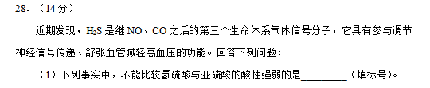
原始配图 1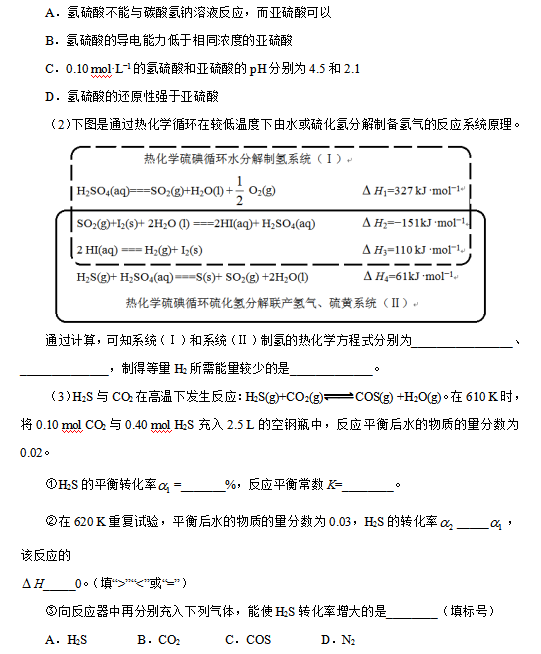
原始配图 2所用高中知识
酸性与还原性区分、盖斯定律、反应进度和固定体积平衡移动。
读题与思路
酸性与得失电子的还原性不能互相替代，(1)D。依题给三式消去中间物：水分解ΔH=327−151+110=286，H₂S分解ΔH=−151+110+61=20 kJ/mol。平衡总气量0.50 mol，水量0.01，故α=0.01/0.40=2.5%；K=0.01²/(0.39×0.09)=2.85×10⁻³。升温水量增为0.015说明吸热。追加CO₂提高H₂S转化率；恒容加N₂不改各组分分压。
分步解析
- （1）不与碳酸氢钠反应、同浓度导电更弱、同浓度pH更大，都可支持H₂S酸性较弱。还原性比较反映电子转移倾向，不直接反映释放H⁺能力，因此选D。
- （2）系统Ⅰ把前三式相加：H₂O(l)→H₂(g)+½O₂(g)，ΔH=327−151+110=+286 kJ·mol⁻¹。系统Ⅱ把后面三式相加：H₂S(g)→H₂(g)+S(s)，ΔH=−151+110+61=+20 kJ·mol⁻¹。
- 两系统都生成1 mol H₂，体系Ⅱ所需反应热更少；这里只比较题给反应热，不额外假设工业装置的全部能耗。
- （3）设610 K反应进度x。因H₂S+CO₂⇌COS+H₂O前后气体量相同，平衡总量仍0.50 mol，水分数x/0.50=0.02，得x=0.010 mol。H₂S转化率α₁=.010/.40=2.5%。
- K=[(.010/2.5)²]/[(.090/2.5)(.390/2.5)]=.0001/.0351≈2.85×10⁻³，按题有效位数约2.8×10⁻³。
- 620 K时x=.50×.03=.015 mol，α₂=3.75%>α₁。升温使平衡正移，正反应ΔH>0。
- 恒温恒容再加CO₂消耗更多H₂S，其转化率增大，选B。加H₂S虽正移却降低H₂S自身的分数转化；加COS逆移；加惰性N₂不改各反应物分压，平衡不移动。
答案
（1）D。（2）H₂O(l)→H₂(g)+½O₂(g)，ΔH=+286 kJ·mol⁻¹；H₂S(g)→H₂(g)+S(s)，ΔH=+20 kJ·mol⁻¹；系统Ⅱ。（3）2.5%；约2.8×10⁻³；α₂>α₁；ΔH>0；B。
检查与易错点
K的浓度单位因计量数差为0而约去；不能把水的摩尔分数2%直接当H₂S转化率。
本题来源：paper2017 · doc-paper
（二）选考题：共45分。请考生从2道物理题、2道化学题、2道生物题中每科任选一题作答。如果多做，则每学科按所做的第一题计分。
相关题目：第 35 题 · 第 36 题
返回原卷说明与相对原子质量 返回非选择题说明 返回选考题说明
题目与已知条件
[化学——选修3：物质结构与性质]（15分）
钾和碘的相关化合物在化工、医药、材料等领域有着广泛的应用。回答下列问题：
（1）元素K的焰色反应呈紫红色，其中紫色对应的辐射波长为_______nm（填标号）。
A．404.4 B．553.5 C．589.2 D．670.8 E.766.5
（2）基态K原子中，核外电子占据的最高能层的符号是_________，占据该能层电子的电子云轮廓图形状为___________。K和Cr属于同一周期，且核外最外层电子构型相同，但金属K的熔点、沸点等都比金属Cr低，原因是___________________________。
（3）X射线衍射测定等发现，I3AsF6中存在I3+离子。I3+离子的几何构型为_____________，中心原子的杂化形式为________________。
（4）KIO3晶体是一种性能良好的非线性光学材料，具有钙钛矿型的立体结构，边长为a=0.446nm，晶胞中K、I、O分别处于顶角、体心、面心位置，如图所示。K与O间的最短距离为______nm，与K紧邻的O个数为__________。
（5）在KIO3晶胞结构的另一种表示中，I处于各顶角位置，则K处于______位置，O处于______位置。
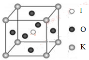
查看原题图／原始配图
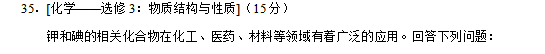
原始配图 1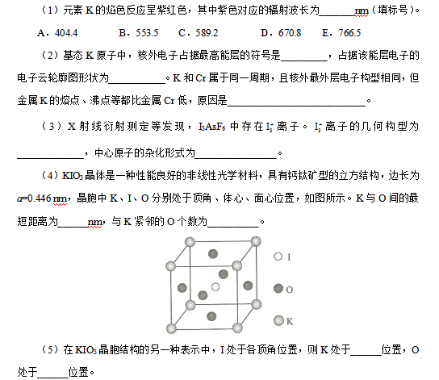
原始配图 2所用高中知识
发射光谱、电子层与轨道形状、金属键、VSEPR和晶胞坐标。
读题与思路
404.4 nm为紫色。K基态[Ar]4s¹，最高N层、s云球形；Cr能参与金属键的电子更多且原子较小。I₃⁺中心有4对价层电子，其中2对孤电子，V形/sp³。晶胞K顶角到O面心距离a/√2=0.315 nm，邻近面心跨胞共有12个；原点移到I后K体心、O棱心。
分步解析
- （1）紫光位于可见光的短波端，选404.4 nm，即A。（2）K基态为[Ar]4s¹，最高电子层是N层；4s电子云轮廓呈球形。
- K与Cr最外层都有4s¹，但K原子较大、参与金属键的电子较少，金属键较弱，因此熔、沸点低于Cr。不能仅由最外层电子数相同推断金属键一样。
- （3）I₃AsF₆中存在I₃⁺，不是I₃⁻。中心I的价层电子对数为(7−1+2)/2=4，其中两对成键、两对孤电子，呈V形，中心I采用sp³杂化。
- （4）K在顶角、O在面心。最近距离为面对角线一半：r(K—O)=a/√2=.446/√2≈.315 nm。顶角周围有12个等距面心O，配位数12。
- （5）把I从体心平移为新晶胞的顶角，相当于原点移(½,½,½)。原K顶角变新体心；原O面心变新棱心，故K位于体心、O位于棱心。
答案
（1）A。（2）N；球形；K原子较大、金属键较弱。（3）V形；sp³。（4）0.315；12。（5）体心；棱心。
检查与易错点
原胞O计数为6×½=3，但一个K周围邻近O有12，这是不同问题。I₃⁺的正电荷使它与常见直线形I₃⁻有不同电子对数。
本题来源：paper2017 · doc-paper
返回原卷说明与相对原子质量 返回非选择题说明 返回选考题说明
题目与已知条件
[化学——选修5：有机化学基础]（15分）
化合物H是一种有机光电材料中间体。实验室由芳香化合物A制备H的一种合成路线如下：
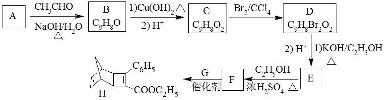
已知：
① RCHO+CH₃CHORCH=CHCHO+H₂O
②
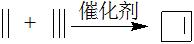
回答下列问题：
（1）A的化学名称为__________。
（2）由C生成D和E生成F的反应类型分别为__________、_________。
（3）E的结构简式为____________。
（4）G为甲苯的同分异构体，由F生成H的化学方程式为___________。
（5）芳香化合物X是F的同分异构体，X能与饱和碳酸氢钠溶液反应放出CO2，其核磁共振氢谱显示有4种不同化学环境的氢，峰面积比为6∶2∶1∶1，写出2种符合要求的X的结构简式____________。
（6）写出用环戊烷和2-丁炔为原料制备化合物
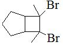
的合成路线________（其他试剂任选）。查看原题图／原始配图
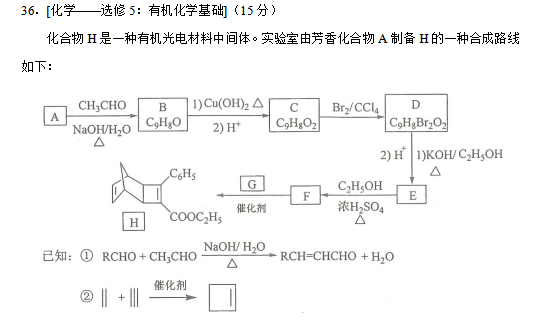
原始配图 1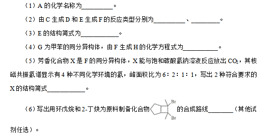
原始配图 2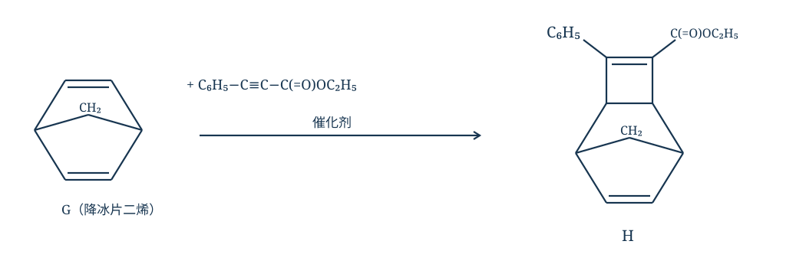
修订前解析配图 3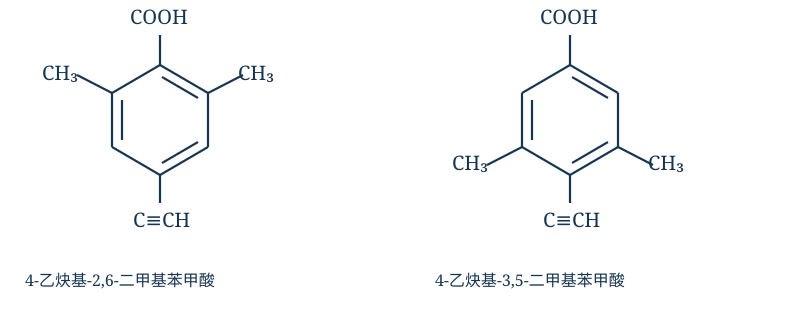
修订前解析配图 4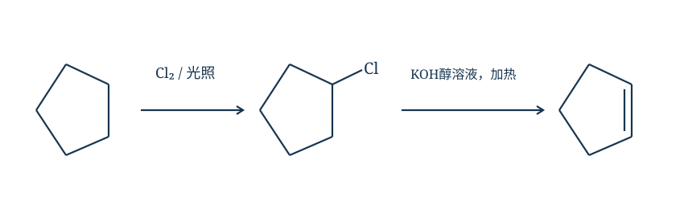
修订前解析配图 5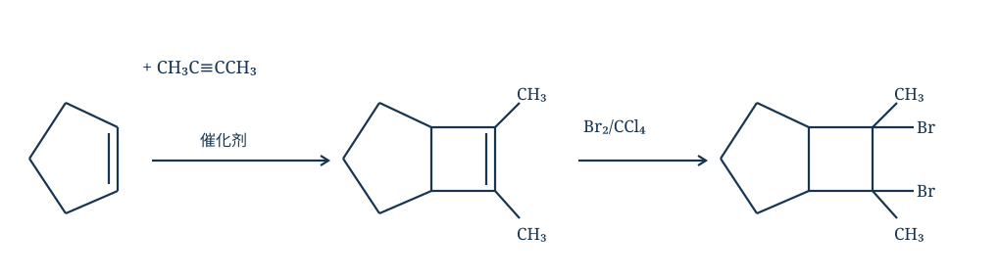
修订前解析配图 6所用高中知识
醛的缩合、氧化、加成、双消去、酯化、氢谱对称性与逆合成。
读题与思路
由醛缩合碳数先得A=苯甲醛，B=PhCH=CHCHO，氧化为肉桂酸C；溴加成后双消去得到E=PhC≡CCOOH，酯化F=PhC≡CCOOEt。按题给烯烃与炔烃形成四元环的信息逆拆H的新四元环，G是降冰片二烯，不能误用另一类环加成。F为C₁₁H₁₀O₂；图列两种羧酸异构体各具有6、2、1、1氢分组。末问由环戊烷氯代/消去取得环戊烯，与2-丁炔环加成再溴加成，原五元环保留。
分步解析
- （1）CH₃CHO提供2个C，B为C₉H₈O，芳香A应为C₆H₅CHO，名称苯甲醛。A缩合后B=C₆H₅CH=CHCHO；氧化、酸化得C=C₆H₅CH=CHCOOH。
- （2）C与Br₂发生双键加成得C₆H₅CHBrCHBrCOOH；D经足量醇KOH双消去、酸化得E=C₆H₅C≡CCOOH。E与乙醇酯化生成F=C₆H₅C≡CCOOC₂H₅，属于取代反应。
- （3）E的结构简式为C₆H₅—C≡C—COOH。（4）根据H逆断新生四元环的两个σ键，可得G为降冰片二烯，F的C≡C与G的一条C=C按信息②环加成，生成H；另一条桥环双键保留，方程见图。
- （5）F分子式C₁₁H₁₀O₂。与NaHCO₃放CO₂要求COOH；图示两种结构中，6H一组由两个对称等价CH₃给出，芳环上两个H等价成2H一组，再加端炔氢1H、COOH的1H，正好6∶2∶1∶1。
- 例如4-乙炔基-2,6-二甲基苯甲酸和4-乙炔基-3,5-二甲基苯甲酸。两个CH₃对称等价，两个芳环H等价，再加炔氢和羧基氢，得到6∶2∶1∶1。各有11C、10H、2O，图示这两种即可作答。
- （6）原料是环戊烷和2-丁炔。环戊烷光照氯代得氯代环戊烷，经KOH醇溶液加热消去得环戊烯；与CH₃C≡CCH₃催化环加成形成与五元环共边的四元烯环；最后Br₂/CCl₄加成得目标邻二溴产物，完整路线见图。
答案
（1）苯甲醛。（2）加成反应；取代反应。（3）C₆H₅C≡CCOOH。（4）F（C₆H₅C≡CCOOC₂H₅）与G（降冰片二烯，C₇H₈）在催化剂作用下按已知②发生环加成，F的C≡C与G的一个C=C形成四元环，生成H。（5）如4-乙炔基-2,6-二甲基苯甲酸、4-乙炔基-3,5-二甲基苯甲酸（任写2种）。（6）氯代→消去→与2-丁炔环加成→溴加成。
检查与易错点
信息①需要有α-H的乙醛进行缩合，不能误把苯环算成消去位置。第(6)起始物为环戊烷，不是甲基环戊烷；加成前后总碳数5+4=9，目标同为9C。
本题来源：paper2017 · doc-paper
题源与核验说明
- 2017.html旧版解析文件；SHA-256：111aff125bc6d559a57bc43f12f16b2092c25f036c2d799cc5499f99d58e31be
- 2017年高考真题——理综（全国I卷） Word版含解析【KS5U 高考】.doc原卷文件；SHA-256：5c339bc8f9867e999b693bb61258623277341133be793f4c4e5203b83b77e28b
- 河南教育网：2017年高考全国Ⅰ卷理综试题及答案同卷题面或参考资料的公开来源；参考答案仅作对照，解析按题设给出推导。